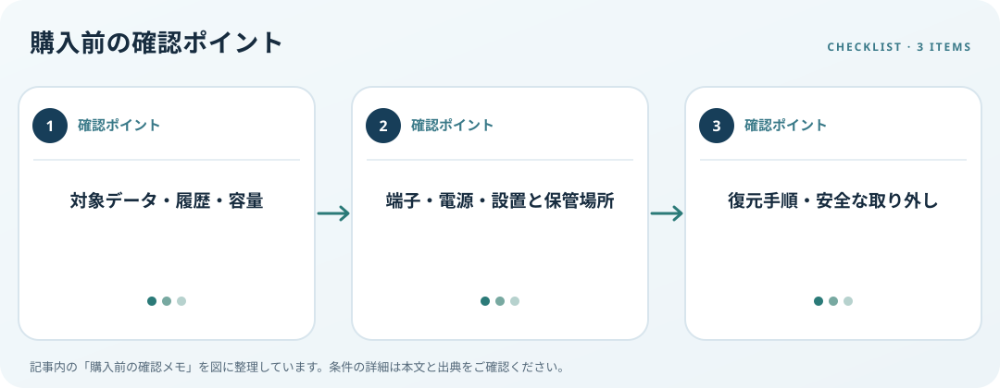

対象データ、容量、接続方法、保存場所と復元手順を決めます。この記事では仕様の確認順を整理します。

保存するデータを整理
バックアップ対象のフォルダーと、過去の何時点まで戻したいかを整理します。Windows File Historyは外付けドライブやネットワーク上の場所を保存先にでき、個人ファイルの過去バージョンを扱う機能として案内されています。現在のデータ量と増加分から必要容量を見積もります。
接続と置き場所を確認
PC側USB端子、ケーブル、外部電源、ドライブ寸法、設置または携帯方法を照合します。容量表示だけで必要量を決めず、履歴や空き領域も考慮します。常時接続するか、必要時に接続するかを決め、保管場所と持ち出し方法も確認します。
復元と取り外しを計画
ファイルをどこから復元するかを事前に調べ、バックアップ成功表示や保存先を定期確認します。MicrosoftはUSBドライブ等を外す際に安全な取り外しを案内しています。バックアップを作るだけでなく復元手順を確認し、重要データを一台だけに置く運用を避けることも検討します。
購入前の確認メモ
- 対象データ・履歴・容量
- 端子・電源・設置と保管場所
- 復元手順・安全な取り外し
この記事は出典の公開情報を購入前の確認項目に整理したもので、特定商品の使用・実測・レビュー・ランキング・価格・在庫の調査は行っていません。購入時には利用機器メーカーの最新仕様をご確認ください。
出典
- Backup and recovery — Microsoft（確認日: 2026-10-10）
- Safely remove hardware — Microsoft（確認日: 2026-10-10）